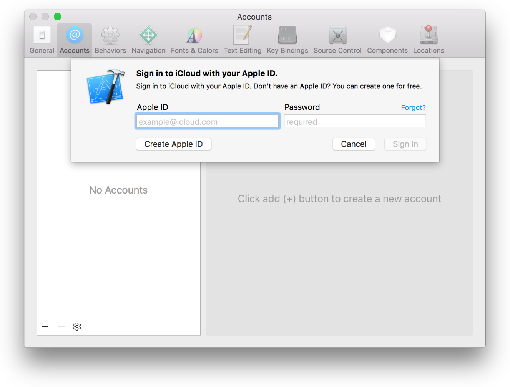

Generate code signing files
Generate a Code Signing Certificate¶
Generate a Code Signing Certificate using Xcode¶
First you have to add your Apple ID to Accounts preferences in Xcode. If you are already done with this, you can skip to step 6.
- Start Xcode
- Select Xcode > Preferences from the navigation bar.
- At the top of the window select
Accounts. - Click on the
+on the lower left corner and selectAdd Apple ID...
- A dialog will appear. Add your Apple ID and your password, then select
Sign in. If you don't have an account you can create your Apple ID by selectingCreate Apple ID.  - Select your Apple ID and your team from the right side bar, then click on
View Details.... - A dialog will appear where you will see your code signing identities and the provisioning profiles.
- Under the signing identities locate the
iOS DevelopmentandiOS Distributionprofiles. If you have not created them you will see aCreatebutton next to them. Simply select it and Xcode will issue and download your code signing identities for you.
Warning
If you have already have Code Signing Identities issued, you will see a Reset button next to them. You can issue new certificates with it, that Xcode will generate and download, however note that this will invalidate your previous certificate, so only do this if you lost those files or you know what you are doing!
Generate a Code Signing Certificate manually¶
- Open your
Keychain Accessapp on macOS. - Select
Keychain Access>Certificate Assistant>Request a Certificate From a Certificate Authority... - Fill in the
User's Email Addressand theCommon Nameand selectSaved to Disk. Click onContinueand save the generatedcertSigningRequestfile locally. - Go to https://developer.apple.com and log in to your account.
- Select
Certificates, IDs & Profilesfrom the left sidebar. - Go to
Certificatesand click on the+button on the top right corner. - Select
iOS App Developmentand click Continue. - On the next page you see the instructions for creating the
certSigningRequestfile. Click continue. - Upload the created
certSigningRequestto the form and click continue. It will generate your code signing certificate for you. - Download the certificate and double click on it to install it. Once installed it will be added to your
Keychain Accessapp.
Generate a Provisioning Profile¶
Provisioning is the process of preparing and configuring an app to launch on devices and to use app services. Development Provisioning Profiles holds the device identifiers ( UUID ) that is eligible to run your app. Distribution Provisioning Profiles can include App Store profiles, that let's you distribute your app to the App Store and Ad-hoc profiles that is good for distributing to your testers.
Generate a Provisioning Profile with Xcode¶
Xcode will automatically generate an App ID for your project, that matches your unique bundle ID for your project. An App ID is used to identify one or more of your apps. It can be an explicit App ID that only matches one unique bundle identifier or a wildcard App ID that can match multiple ones.
Xcode will also create a Team Provisioning Profile for your project automatically, so you can start deploying to your device automatically.
If you hit any issues you should make sure that the device is eligible, for example if the device doesn't match the deployment target you will get an error.
Also make sure that your app is connected to the correct Team.
- Select your project file from Xcode's project navigator
- Go to the
Signingsection and under theTeamselect your correct team.
Note
If you hit any issues and can't resolve it move to the manual step and set up Provisioning Profiles according to the documentation.
Note
To setup a distribution Provisioning Profile go ahead with the manual setup.
Download a Provisioning Profile with Xcode¶
If you have already created the Provisioning Profile, you can do the following.
- Start Xcode
- Select Xcode > Preferences from the navigation bar.
- At the top of the window select
Accounts. - Select your Apple ID and your team from the right side bar, then click on
View Details.... - A dialog will appear where you will see your code signing identities and the provisioning profiles.
- Under Provisioning Profiles locate the ones you are looking for and click on the
Downloadbutton. Xcode will download the profile and move it to it's location automatically.
Generate a Provisioning Profile manually¶
Setup an App ID¶
- If you don't have already created an App ID for your project go to https://developer.apple.com and log in.
- Select Certificates, Identifiers & Profiles from the left sidebar
- Navigate to Identifiers > App IDs
- In the
App ID Descriptionadd a recognizable name for your App ID - Select
Explicit App IDand add your bundle identifier to the field. - Select any additional
App Servicesthat you need. - Click continue.
Generate a Provisioning Profile¶
- Go to https://developer.apple.com and log in.
- Select Certificates, Identifiers & Profiles from the left sidebar
- Navigate to Provisioning Profiles > All
- Select the
+from the top right corner. - For Development select the correct project type under
Development, or for distribution select the correct one underDistributionand click continue. - Select the App ID you would like to use.
- Select the certificates you wish to include in the Provisioning Profile. These certificates will be able to build with this profile and click continue.
- Select all the devices you would like to use with this profile and click continue.
- Name your Provisioning Profile and click continue.
- Your profile is generated. You can download it to your device and double click on it to install to your macOS.
Download a Provisioning Profile¶
- Go to https://developer.apple.com and log in.
- Select Certificates, Identifiers & Profiles from the left sidebar
- Navigate to Provisioning Profiles > All
- Find the Provisioning Profile you are looking for from the list or use the search to filter it for you.
- Click on the selected Provisioning Profile, this will extend the details.
- If it's status is invalid, you can click on the
Editbutton and save again. - Click on the
Downloadbutton to download it and double click on it to install to your macOS.
-
Screenshots from https://developer.apple.com/support ↩